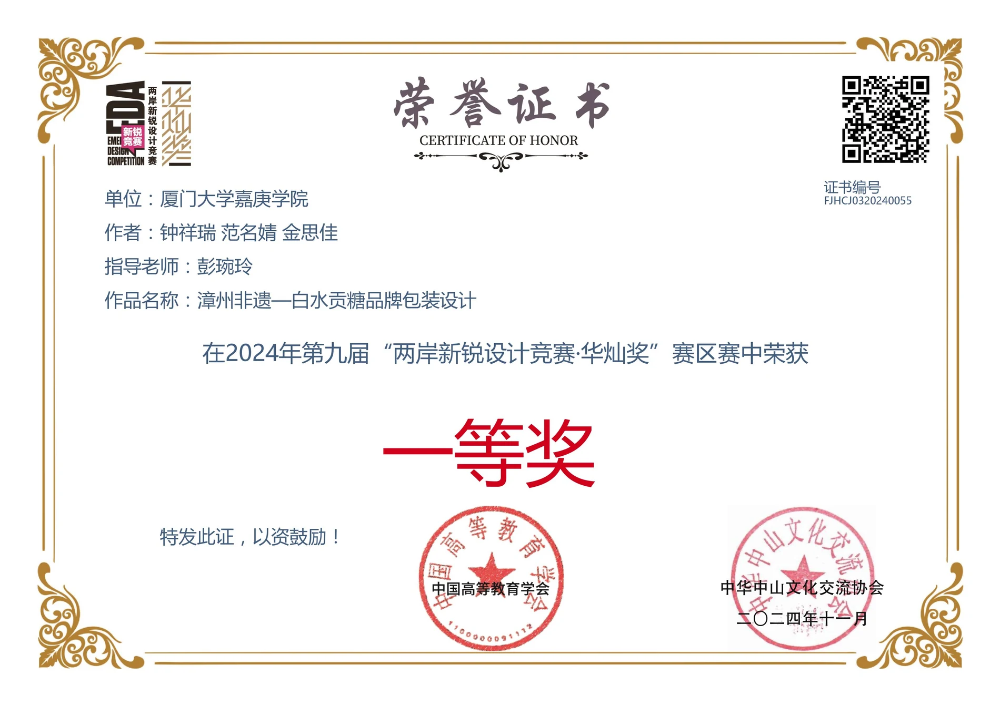
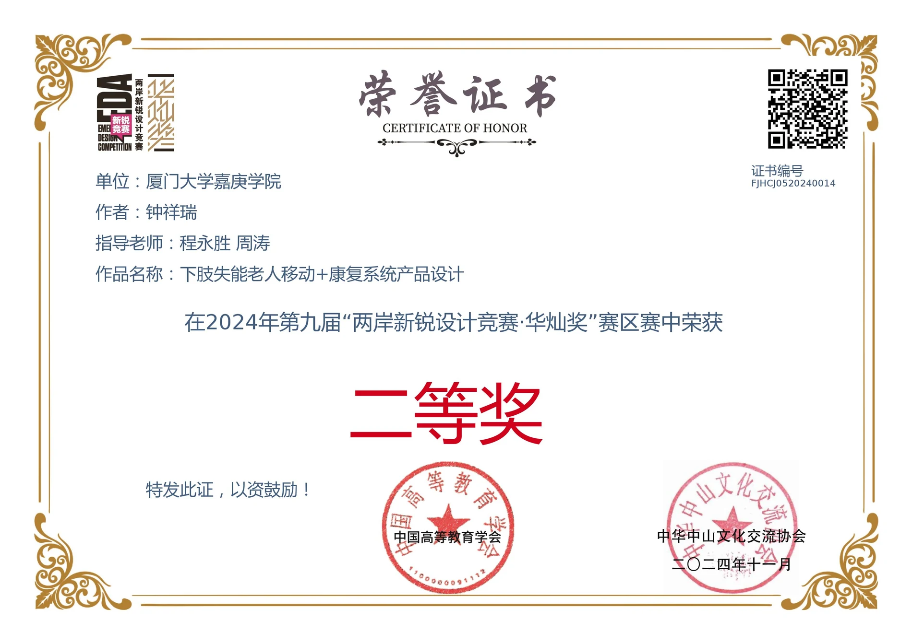
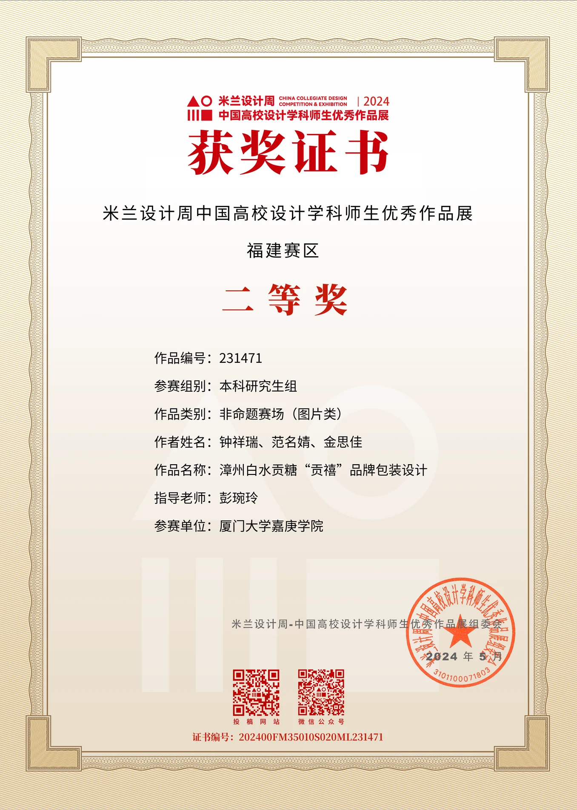
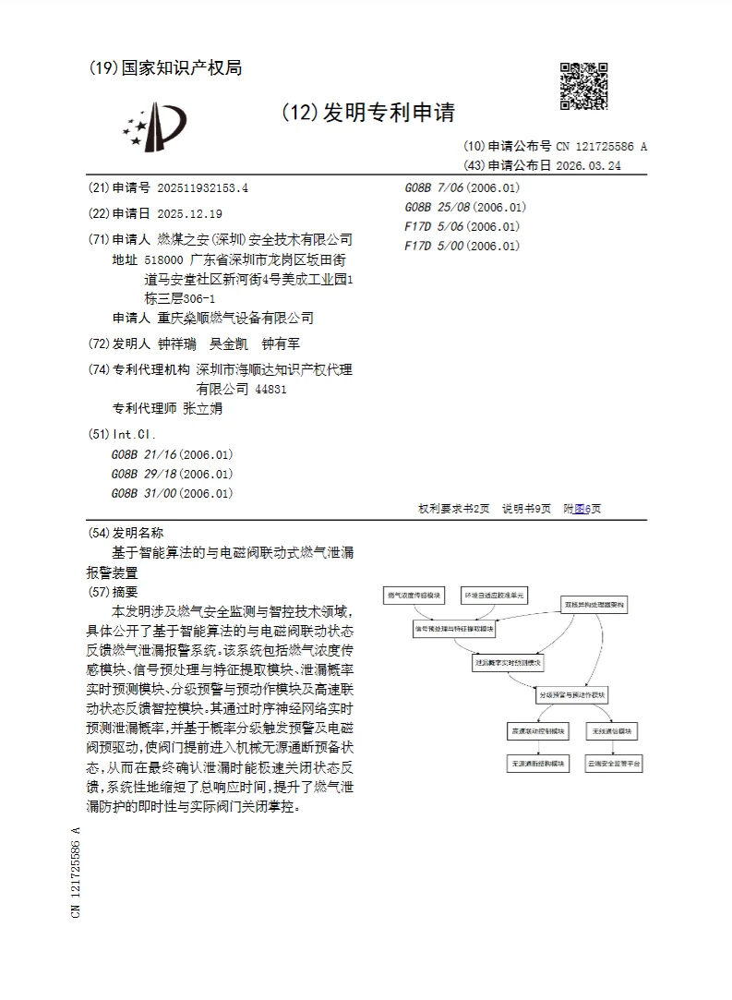

智能硬件产品经理 / 工业 IoT 产品经理方向
你好，我是钟祥瑞。
产品设计背景，关注智能硬件与工业 IoT 产品从用户场景、产品定义、结构方案、样机验证到客户交付的完整链路。曾参与气体检测设备、水阀电动执行器、燃气安全终端与车载露营产品系统设计，具备产品场景分析、功能拆解、结构表达、竞品研究和产品资料转化能力。
- 2026
- 本科应届
- 3.47
- GPA
- 4+
- 奖项荣誉
About
我能提供的产品价值
我擅长把模糊的客户需求、使用场景和技术约束，转化为清晰的产品定义、功能边界、结构方案和对外表达材料。
在智能硬件和工业 IoT 项目中，我关注的不只是外观表达，而是产品面向谁、解决什么场景、第一版应该做什么、样机如何验证、认证和交付边界如何说明，以及销售、研发、设计和客户之间如何对齐。
Experience & Projects
经历与项目
项目 01 · 智能硬件 / 工业 IoT 产品项目
东莞嘉德云网络有限公司
参与气体检测设备、水阀电动执行器与家用燃气安全终端相关项目，围绕目标市场、客户场景、结构方案、样机验证、产品资料、认证边界与平台交付链路进行梳理和表达，理解智能硬件从需求、结构、样机到客户交付的产品推进逻辑。
毕业设计 / 产品研究项目
陆野派车载露营手冲咖啡机
负责露营咖啡场景研究，通过文献研究、社群观察、竞品分析与用户画像归纳核心需求，并转化为产品功能架构、使用流程和系统化设计方案。
项目 03 · 专利与结构方案
燃气泄漏报警与电磁阀联动装置
参与发明专利申请前期方案表达，围绕报警主体、电磁阀联动、状态反馈与安装识别进行结构差异化表达，支撑专利申请材料与产品方案展示。
Capabilities
能力矩阵
产品定义
用户场景分析、竞品分析、目标用户拆解、产品定位、功能边界、MVP 思维、产品卖点提炼。
智能硬件理解
了解结构设计、BOM、样机验证、传感器、通信模块、固件、认证边界、试产 / 量产基础流程。
工业 IoT / ToB 项目理解
了解设备安装、平台字段、告警上报、故障反馈、客户验收、监管数据推送与项目交付链路。
表达与工具
Rhino、KeyShot、Figma、Adobe、Office / Excel、Notion、ChatGPT、Codex；可完成产品方案、竞品分析、功能架构、项目资料和对外展示材料。
Awards & Credentials
奖项 / 专利 / 学术荣誉
- 发明专利申请公开｜基于智能算法的与电磁阀联动式燃气泄漏报警装置
- 2024 年第九届两岸新锐设计竞赛“华灿奖”一等奖｜漳州非遗白水贡糖品牌设计
- 米兰设计周中国高校设计学科师生优秀作品展福建赛区二等奖｜漳州非遗白水贡糖品牌设计
- 2024 年第九届两岸新锐设计竞赛“华灿奖”二等奖｜下肢失能老人移动 + 康复系统产品设计
- 2023-2024 学年校“三好学生”；连续获得校优秀学生一等奖学金




Contact
如果你正在寻找智能硬件 / 工业 IoT 产品经理候选人，欢迎联系我。
我希望进入智能硬件、AI 硬件、工业 IoT 或消费电子产品团队，从产品定义、用户场景、结构方案和项目推进工作切入，持续成长为能独立负责产品线的产品经理。